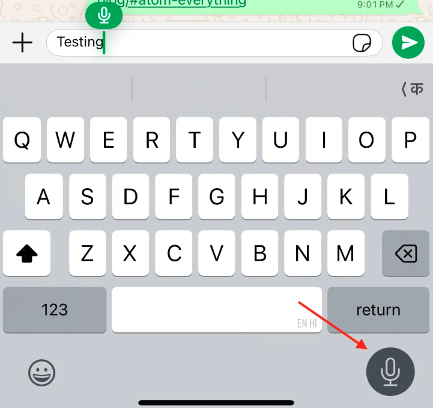

Using AI to Answer Questions
The last two are a great if you are thinking about how to incorporate Generative AI in your work or life.
A hack I learned recently is anytime I have a question I am too embarrassed / worried / lazy to ask the right person or even google for, I just ask Claude or ChatGPT. Here are some examples of questions that would have gone unanswered but for the chatbots.
A piece I was reading mentioned that Starlink's low earth orbit satellites have a useful life of 5 years. I wondered what happens to them afterwards. Sure I could have googled that1 and probably found the answer somewhere in the top 3 links2. But having the bot answer your exact question has a lot less friction than doing that and I find I am asking a lot more of these questions.
I recently started reading Cloud Atlas by David Mitchell, apparently a modern classic. After the first 10 pages I was really struggling to understand what was going on and ordinarily I would have just dropped the book.
Instead, I asked Claude "I am reading the book Cloud Atlas. I am struggling to understand the theme through the first few pages." I got this response: "The book is structured in a unique way, with six nested stories that span different time periods and genres. Each story is interrupted halfway through, only to be concluded in reverse order in the second half of the book."
No risk of spoilers and I suddenly felt more comfortable navigating the book.
Claude has already changed my mind on multiple questions and I am sure will keep doing so. I hereby declare 2025 the year of asking more questions.
Did you know that (in iOS at least) this button allows you to dictate text? I used to think it was to send a voice message (don't do that) but no, this types it out and does a pretty good job of it too. This deserves to be used a lot more.
